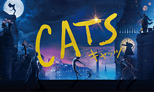
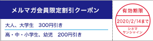
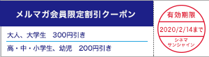

|
シネマサンシャインメールマガジン 2020/1/24号【グランドシネマサンシャイン版】 |
 |
毎月1日は映画サービスデー
どなたさまでも1,200円でご鑑賞いただけます。 次回は来週2/1（土）です！ ※3D、4DX、IMAX、ATMOS、dts-x、ScreenX、BESTIAは別途追加料金が必要となります。 |
オススメ作品
『キャッツ』
1/24（金）公開

©2019 Universal Pictures. All Rights Reserved.
1981年にロンドンで初演されて以来、観客動員数は世界累計8100万人に達し、日本公演も通算1万回を記録するなど、世界中で愛され続けるミュージカルの金字塔「キャッツ」を映画化。 「レ・ミゼラブル」「英国王のスピーチ」のトム・フーパーが監督、スティーブン・スピルバーグが製作総指揮を務め、ジェームズ・コーデン、ジェニファー・ハドソン、テイラー・スウィフト、ジュディ・デンチ、イアン・マッケランら豪華キャストが共演した。 人間に飼いならされることを拒み、逆境の中でもしたたかに生きる個性豊かな「ジェリクルキャッツ」と呼ばれる猫たち。 満月が輝くある夜、年に一度開かれる「ジェリクル舞踏会」に参加するため、街の片隅のゴミ捨て場にジェリクルキャッツたちが集まってくる。 その日は、新しい人生を生きることを許される、たった一匹の猫が選ばれる特別な夜であり、猫たちは夜を徹して歌い踊るが……。
監督：トム・フーパー
出演：ジェームズ・コーデン ジュディ・デンチ ジェイソン・デルーロ、ジェニファー・ハドソン テイラー・スウィフト イアン・マッケラン
出演：ジェームズ・コーデン ジュディ・デンチ ジェイソン・デルーロ、ジェニファー・ハドソン テイラー・スウィフト イアン・マッケラン
公式サイト：https://cats-movie.jp/
『バッドボーイズ フォー・ライフ』
1/31（金）公開
©2019 CTMG. All Rights Reserved.
ウィル・スミス＆マーティン・ローレンス主演による大ヒットアクション映画「バッドボーイズ」の17年ぶり新作となるシリーズ第3弾。 マイアミ市警の敏腕刑事コンビ、マイク・ローリーとマーカス・バーネット。 ブランド物のスーツをスタイリッシュに着こなし、得意のドライビングテクニックでポルシェを飛ばすマイクに対し、マーカスは家族こそが守るべき大切なものと考え、そろそろ引退を考えている。 若いエリートたちと組むことになった2人は、自分たちが年寄り扱いされることに我慢できない。 そんな中、マイクが何者かに命を狙われ、バッドボーイズ最大にして最後の危機が訪れる。
監督：アディル・エル・アルビ ビラル・ファラー
出演：ウィル・スミス マーティン・ローレンス バネッサ・ハジェンズ
出演：ウィル・スミス マーティン・ローレンス バネッサ・ハジェンズ
上映作品


ニュース
○シネマサンシャイン「おやこシネマ」開催！
子育て中のママ、パパがお子さま連れで一緒に映画を鑑賞できる上映会を開催いたします。
小さいお子さま連れでの映画鑑賞は…
「びっくりして泣いてしまったら…」
「暗いので子供が怖がるかも…」
「子供がおしゃべりしたり歩き回るかも…」
そんな不安や心配がつきないママ、パパの為の上映会です。
音量が通常よりも小さめで、照明も明るめに設定されており、
小さなお子様でも怖がることなくご鑑賞いただけます。
今後の実施は下記となります。
1月28日(火)『キャッツ』
2月25日(火)『スウィング・キッズ』

小さいお子さま連れでの映画鑑賞は…
「びっくりして泣いてしまったら…」
「暗いので子供が怖がるかも…」
「子供がおしゃべりしたり歩き回るかも…」
そんな不安や心配がつきないママ、パパの為の上映会です。
音量が通常よりも小さめで、照明も明るめに設定されており、
小さなお子様でも怖がることなくご鑑賞いただけます。
今後の実施は下記となります。
1月28日(火)『キャッツ』
2月25日(火)『スウィング・キッズ』
○シネマサンシャインの新しい会員サービス『シネマサンシャイン リワード』スタート！
もっともっとオトクに映画を観よう！６ポイントで１回鑑賞無料！毎週木曜は1,100円鑑賞などお得なサービスがいっぱいです！シネマサンシャインアプリから新しい会員サービスへ登録いただけます。 是非ご登録ください。
全劇場で対応開始！
※年会費500円あり
全劇場で対応開始！
※年会費500円あり

○メルマガ会員限定割引クーポンプレゼント！
メルマガ会員様限定でお得な割引クーポンをプレゼント！
以下の画面をチケット購入時にご提示ください。
PCでご覧のお客様は該当部分を印刷してご提示ください。

以下の画面をチケット購入時にご提示ください。
PCでご覧のお客様は該当部分を印刷してご提示ください。

※有効期限は2月14日までになります。
※割引券1枚で2名様まで有効。 他の割引サービスとの併用はできません。
※特別興行などご利用いただけない場合がございます。
※インターネット購入（e-box、ムビチケ)ではご利用いただけません。
※期間中何回でもご利用頂けます。
池袋、ユーカリが丘、大和郡山、北島、下関、姶良の自動券売機では下記QRをご利用ください。
【一般・大学生】
【高校生以下】

【一般・大学生】
【高校生以下】
ムービークイズ
○前回のクイズ
1/10公開『フォードvsフェラーリ』ダブル主演のクリスチャン・ベイルが90年代に名作小説の映画化に出演しました。 同作は新たに映画化し3月に公開します。 その作品はなんでしょう？
ヒント：日本では過去にテレビアニメ化されたことがあります。
1/10公開『フォードvsフェラーリ』ダブル主演のクリスチャン・ベイルが90年代に名作小説の映画化に出演しました。 同作は新たに映画化し3月に公開します。 その作品はなんでしょう？
ヒント：日本では過去にテレビアニメ化されたことがあります。
答え：「若草物語」
クリスチャン・ベイルが演じたジョーのソウルメイト、ローリー役は、3/27公開『ストーリー・オブ・マイライフ／わたしの若草物語』では『君の名前で僕を呼んで』のティモシー・シャラメが演じます。
クリスチャン・ベイルが演じたジョーのソウルメイト、ローリー役は、3/27公開『ストーリー・オブ・マイライフ／わたしの若草物語』では『君の名前で僕を呼んで』のティモシー・シャラメが演じます。
○今回のクイズ
1/24公開『キャッツ』に出演するジェームズ・コーデンは、実写映画化された『ピーターラビット』でピーターラビットの声を担当しましたが、「ピーターラビット」の作者の人生を映画化した作品で主演を務めたのは誰でしょう。
ヒント：本年度アカデミー賞主演女優にノミネートされています。
1/24公開『キャッツ』に出演するジェームズ・コーデンは、実写映画化された『ピーターラビット』でピーターラビットの声を担当しましたが、「ピーターラビット」の作者の人生を映画化した作品で主演を務めたのは誰でしょう。
ヒント：本年度アカデミー賞主演女優にノミネートされています。
答えは、次回のシネマサンシャインメールマガジンで！